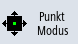
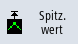
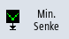

Sie haben die Möglichkeit folgende Werte einer Kurve direkt zu ermitteln:
-
Spitze-Spitze-Wert
-
Spitze-Tal-Wert
Vorgehensweise
 | | Im Grafikfenster "Trace" ist eine Aufzeichnung geöffnet. |
|  | | Drücken Sie den Softkey "Point Mode", um den Cursor kontinuierlich auf der Kurve zu bewegen. |
| | | Drücken Sie den Softkey "Peak Mode", um den Cursor auf den höchsten Wert zu positionieren. |
| | | Drücken Sie den Softkey "Valley Mode", um den Cursor auf den niedrigsten Wert zu positionieren. |
|  | | Drücken Sie den Softkey "Spitzen", werden nur die Spitze-Spitze-Werte angesteuert. |
|  | | Drücken Sie den Softkey "Minimal", werden nur die Spitze-Tal-Werte angesteuert. |